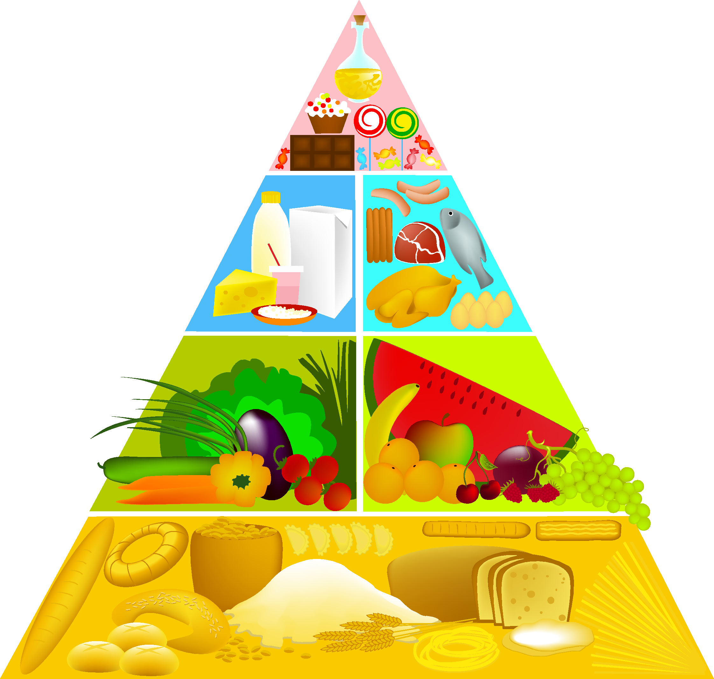
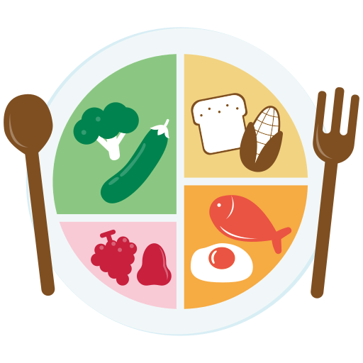
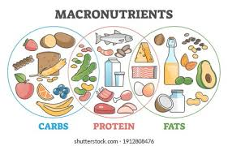
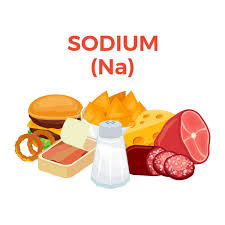
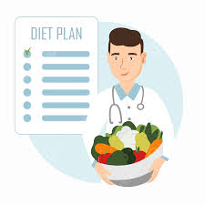

Eat A Variety of Foods
Ensure your meals have a balance of friuts, vegetables, lean, protein, whole grain, and healthy fats.
Aim for a variety of color in your fruits and vegetables to get a range of nutrients.

Portion Control
Use smaller plates and bowls to help control portion sizes.
Focus on eating slowly and savoring your food to prevent overeating.
Stay hydrated
Aim for 8-10 glasses of water a day. Adjust based on your activity level and climate.
Reduce consumption of soda, energy drinks, and other high-sugar beverages.

Balanced Your Macronutrients
Protein: Include lean proteins like chicken, fish, beans, and legumes.
Carbohydrates: Choose complex carbs like whole grains, fruits, and vegetables over refined carbs.
Fats: Focus on healthy fats from sources like avocados, nuts, seeds, and olive oil.

Reduce Processed Food
Minimize processed snacks: Limit chips, cookies, and other high-sugar or high-salt snacks.
Cook at home: Preparing meals at home allows you to control ingredients and avoid unhealthy additives.

Dont skip Breakfast
Start your day right: Eating a balanced breakfast can help kickstart your metabolism and provide energy for the day.

Plan Your Meals
Meal prep: Plan and prepare meals ahead of time to avoid unhealthy, last-minute choices.
Balanced snacks: Keep healthy snacks on hand, like nuts, yogurt, or fruit, to prevent overeating during meals.
Read Nutrition Labels
Be informed: Check the nutritional content of packaged foods to make healthier choices.
Watch for hidden sugars: Be aware of added sugars in items like sauces, dressings, and bread.